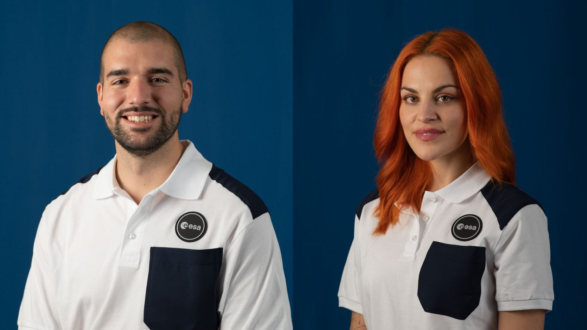

La base de nuestro proyecto
¿A quién se dirige?
La Situación de Aprendizaje “To Infinity and Beyond: the Advantages of Exploring the Universe” está dirigida a 2º de la ESO y busca poner en valor el progreso científico a través del análisis de contribuciones españolas en la ciencia y la exploración espacial, incluyendo astronautas y el futuro del turismo espacial. No obstante, es fácilmente adaptable a otro nivel como 3º o 4º de la ESO siempre y cuando regulemos el nivel de dificultad de los contenidos.
El Producto Final
Como producto final, el alumnado creará un “Astronaut Instagram Profile” en formato flipbook, donde investigará el recorrido académico y profesional de figuras como Sara García Alonso o Pablo Álvarez Fernández: qué estudiaron, en qué trabajan y cuáles son sus aportaciones científicas. Además, incluyendo mujeres en el mundo de la ciencia también podemos trabajar con la motivación y con la reflexión sobre el empoderamiento femenino en el sector.
Nuestras herramientas
El proyecto combina Canva y Calaméo. Canva se utilizará para el diseño visual de perfiles y publicaciones, conectando con la estética de Instagram y la motivación del alumnado. No obstante, también contaremos con el formato físico para exponerlo en el centro. Por otro lado, Calaméo permitirá transformar ese contenido en un flipbook digital interactivo, aportando un acabado más dinámico y atractivo que podremos compartir en la web del centro. Ambas herramientas son gratuitas y accesibles desde cualquier dispositivo, lo que permite trabajar tanto en el aula como desde casa en la nube y sin necesidad de instalar ningún software.
Nuestro contenido
A nivel competencial, el proyecto trabaja vocabulario técnico relacionado con el desarrollo científico, los astronautas (especialmente los de origen español), el uso social de la ciencia y el turismo espacial.
Además, como contenido gramatical contaremos con el uso del Present Perfect. Como mencionamos anteriormente, nos apoyaremos del español como lengua vehicular y como herramienta mediadora entre los contenidos técnicos y nuestro proyecto dado la complejidad de la temática y la edad de nuestro grupo-clase. Con esto en mente, el uso de herramientas digitales facilitará centrarse en la investigación y en el uso correcto del inglés a la vez que mantemos viva la naturaleza híbrida del proyecto con un Producto Final tangible.
